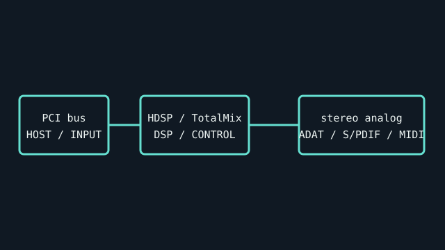

[ INDIVIDUAL COMPONENT // SOUND HARDWARE ]
RME Hammerfall DSP HDSP 9632
The HDSP 9632 is RME’s conventional PCI digital audio card with analog and digital I/O provided through dedicated breakout cables. It is not the PCIe HDSPe AIO.

IDENTIFICATION: Match the complete printed model, revision, bundled breakout, and accessory markings. Specs below describe this named model; family-level variants are not assumed interchangeable.
Specifications
| Catalog subcategory | PCI sound cards |
|---|---|
| Product ID | RME Hammerfall DSP HDSP 9632 |
| Bus / host | Conventional PCI expansion card (not PCI Express). |
| Connectors and I/O | Stereo analog I/O via the model-specific analog breakout cable; optical ADAT I/O, coaxial S/PDIF I/O and MIDI I/O via digital breakout cable. Optional WCM and analog expansion modules add functions. |
| Chipset / conversion / protocol | RME HDSP architecture with TotalMix routing/mixing; analog conversion and digital paths support model/manual-defined rates up to 24-bit/192 kHz depending on channel/path and expansion. ADAT channel count decreases at higher sample rates. |
| Drivers / operating systems | RME maintains a model-specific driver archive; supported Windows/macOS versions depend on current legacy driver package. Check HDSP 9632 release notes; Linux support is not claimed by this record. |
| Variant compatibility | HDSP 9632 is PCI; HDSPe AIO is a separate PCIe product with different connections. Original analog and digital breakout leads have model-specific pinout. Optional AI4S/AO4S boards are distinguishable from AIO-suffix modules. |
Service & preservation
Record breakout cable part numbers and expansion modules with the card. Protect the fine-pitch breakout header and inspect ribbon lead orientation before power. Save RME settings/routing and driver version before host changes.
Identification and compatibility checks
- Photograph the product/model label, board silkscreen/revision, connector faces, cable assemblies, and accessory part numbers before installation.
- Check electrical bus and host slot or USB/MIDI protocol support against the exact manual; connector shape alone does not establish compatibility.
- For analog I/O, confirm line/mic/instrument level, phantom-power behavior, channel map, and direction from the model-specific documentation before connecting equipment.
- When software or driver support is uncertain, preserve the last known-good installer and document tested host OS, driver version, and device identifier.
Primary manufacturer & standards sources
- RME HDSP 9632 official product pageManufacturer page details breakout cables and compatibility with expansion boards.
- RME HDSP 9632 manual (PDF)Model-specific manual for I/O, sample-rate modes, breakout pinout, and setup.
- RME official downloadsManufacturer driver archive; OS support is release-specific.
Source selection is model-specific where an original manual or vendor product/support page exists. Archived scans preserve manufacturer documentation; operating-system claims are limited to what the cited product/manual materials identify.